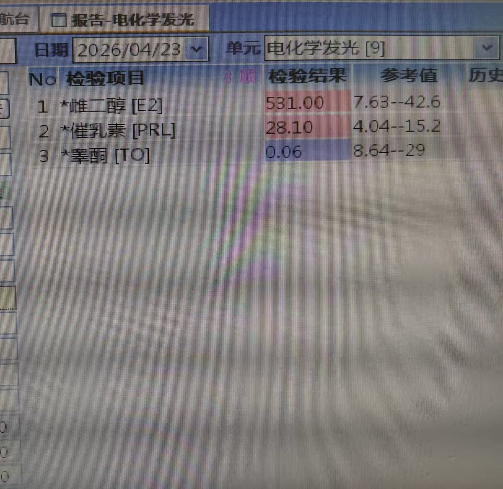

莉绾喵 🏳️⚧️🍥
@liwanmiaohy
抽血时应该是距离上一次服药没有间隔12~11小时，那测到的其实有可能是峰值尾巴，不是真正的谷值。补佳乐含服的话，峰值可以冲到800 pg/mL以上，然后快速下降。531 pg/mL如果是峰值尾巴，完全正常。也只可能有这种情况了，不然不现实。
且如果想要达到谷值稳定100pg以上，还是得早晚11点分别含服2mg补的

是Rinne酱呀
@SonogamiRinneTS
不是，咱也就每天2mg补，每两天1/8片色（相当于平均每天3.125mg），为啥雌二醇谷值还会这么高呀。怪不得咱最近这段时间几乎天天发情😭 https://t.co/ZjWfm9sIVQ